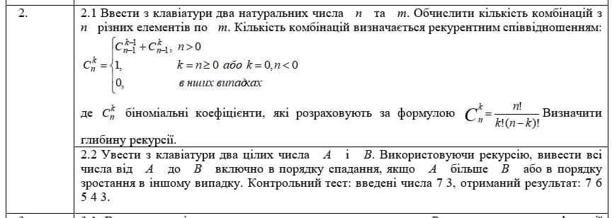
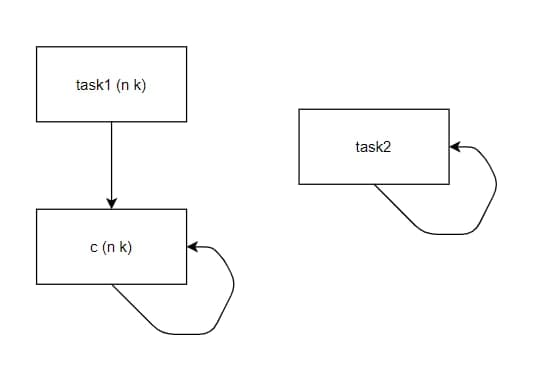
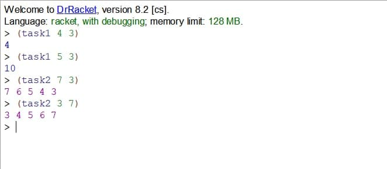
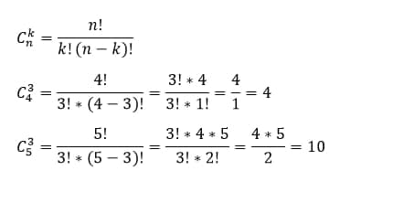

МІНІСТЕРСТВО ОСВІТИ І НАУКИ УКРАЇНИ
КИЇВСЬКИЙ НАЦІОНАЛЬНИЙ УНІВЕРСИТЕТ імені Тараса Шевченка
ФАКУЛЬТЕТ ІНФОРМАЦІЙНИХ ТЕХНОЛОГІЙ
Кафедра програмних систем і технологій
Дисципліна:
«Функціональне програмування»
Звіт з лабораторної роботи №1
на тему:
Використання рекурсії для організації повторювальних процесів
Виконав: Бурлай Дмитро Ігорович
Група: ІПЗ-42
Форма навчання: денна
Перевірила: Ніколаєнко Анастасія Юріївна
2021
Мета роботи:
Сформувати декларативне мислення в галузі програмування завдяки використанню чистих функцій, рекурсій замість циклів, запобіганню даних, що змінюються. Опанувати застосування рекурсивних функцій для обчислювальних процесів.
Постановка завдання:
Написати процедури, що обчислюють задану функцію за допомогою рекурсивного процесу. Продемонструвати застосування звичайної та хвостової рекурсії.

Середовище Dr.Racket:
Dr.Racket підтримує ряд діалектів та стандартів, в тому числі діалект функціональної мови програмування Scheme, яка якраз вивчалася та використовувалася в ході виконання даної роботи.
Структура програми (HIPO діаграма):

Код програми:
(define (task1 n k) #ініціалізація функції task1
(c n k) #виклик функції с
)
(define (c n k) #ініціалізація функції с
(if (and (> n 0) (not (eq? n k))) #оператор умови
(+ (c (- n 1) (- k 1) ) (c (- n 1) k)) #дії які викон. за умови
(if (or (= n k) (= k 0) (< n 0)) #в протилеж. випадку перевірити наступну умову
1 #повернути якщо умова викон.
0 #повернути якщо умова не викон.
)
)
)
(define (task2 a b) #ініціалізація функції task2
(display a) #вивести а
(display " ") #вивести пробіл(для коректного відобр.)
(if (> a b) #перевірити умову
(task2 (- a 1) b) #повернути якщо умова викон.
(display "") #повернути якщо умова не викон.
)
(if (< a b) #перевірити умову
(task2 (+ a 1) b) #повернути якщо умова викон.
(display "") #повернути якщо умова не викон.
)
)
Результат роботи програми:

Перевірка обчислень у завданні 1:

Порахувавши комбінації за формулами та через написану програму бачимо, що відповіді збігаються, а отже програма працює правильно.
В результаті маємо рішення двох завдань: перше виконано методом звичайної рекурсії, а друге - методом хвостової рекурсії.
Висновки:
У цій лабораторній роботі було опановано застосування рекурсивних функцій у вирішенні деяких обчислювальних процесів. Було ознайомлено із середовищем розробки Dr.Racket, та вирішено завдання із використанням рекурсивного методу.